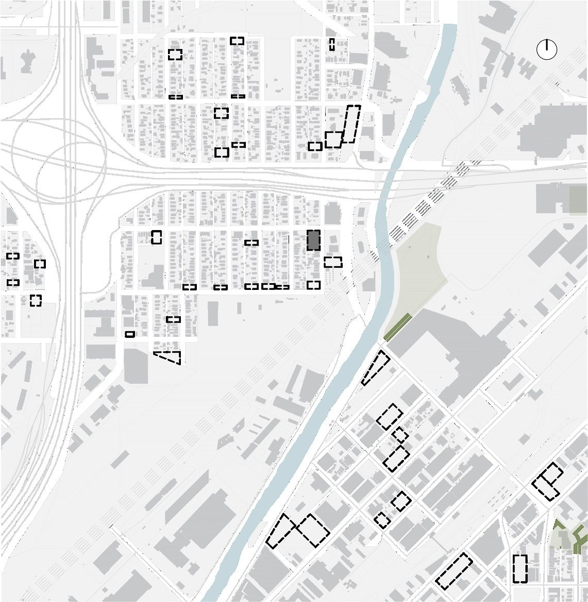
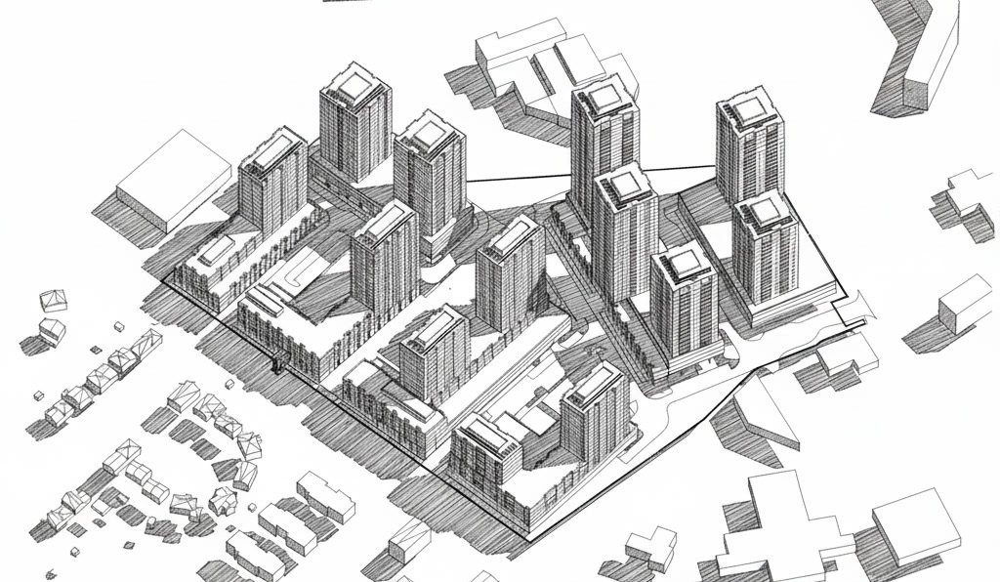
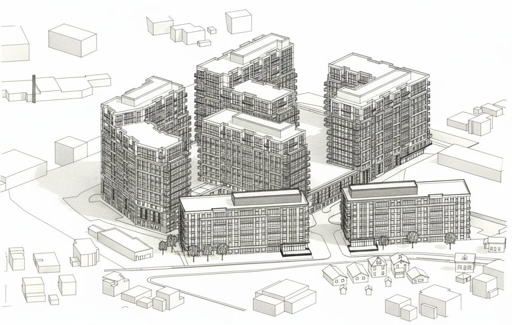
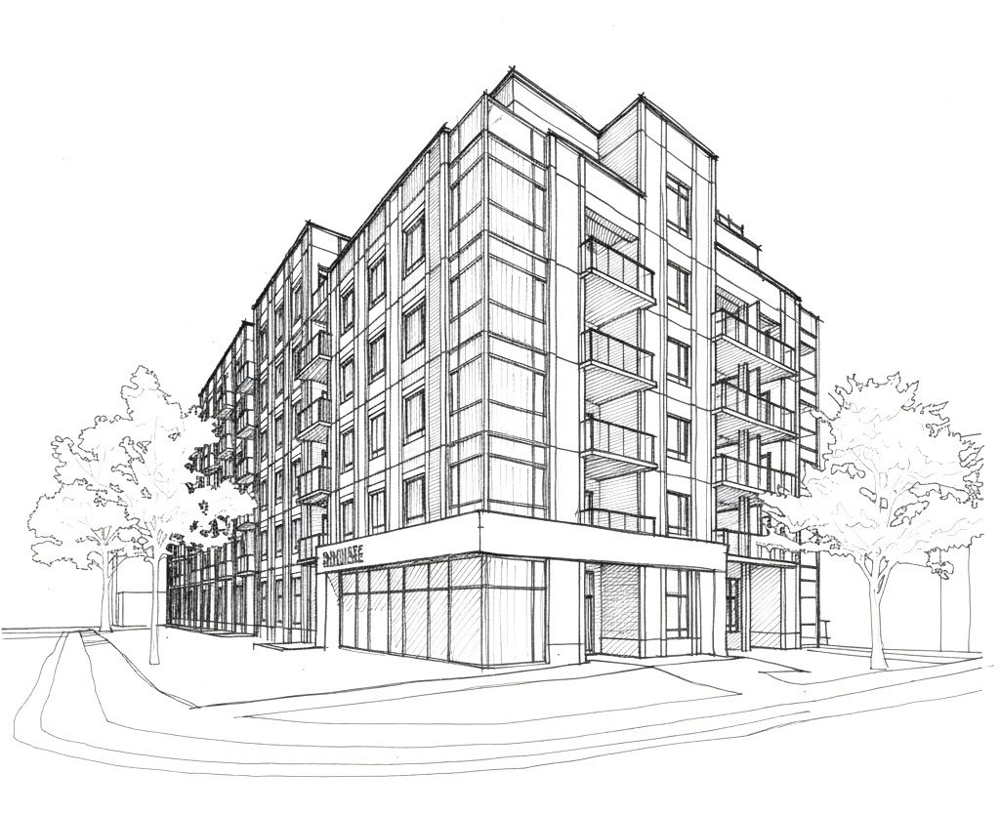
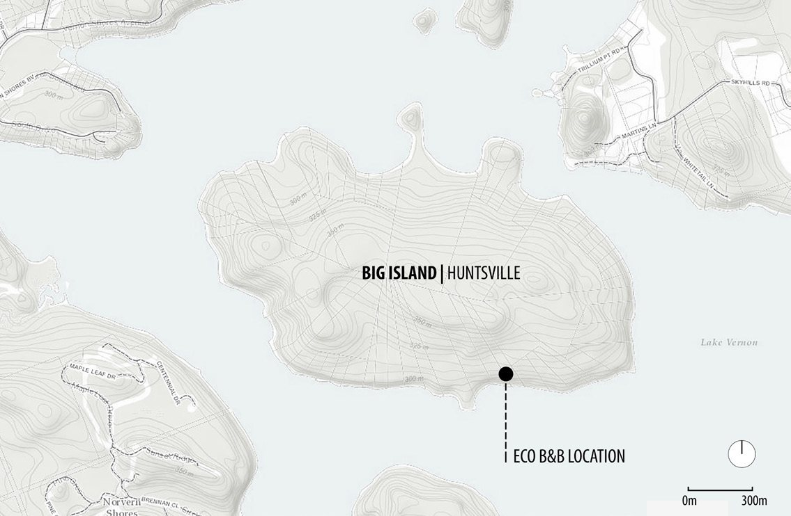
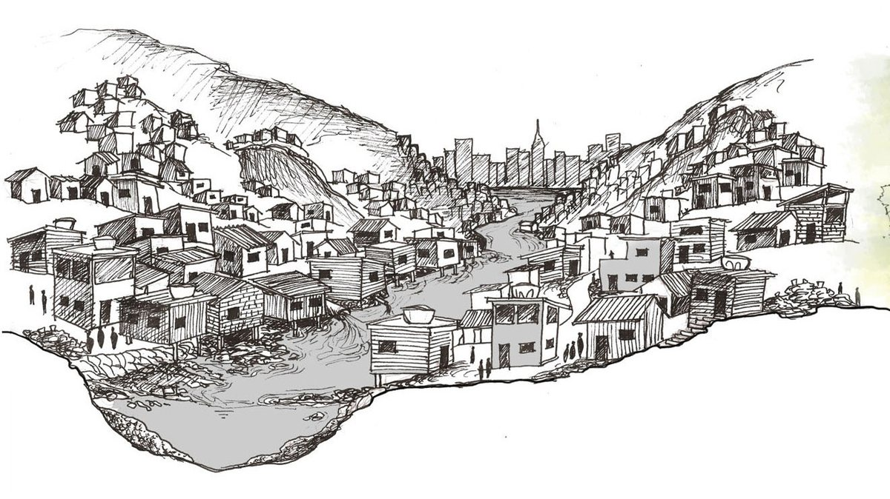
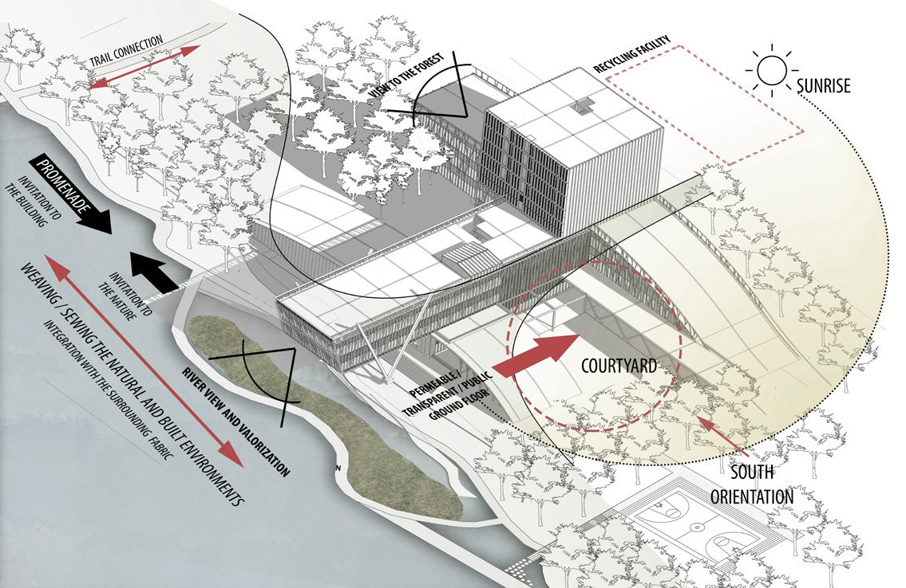
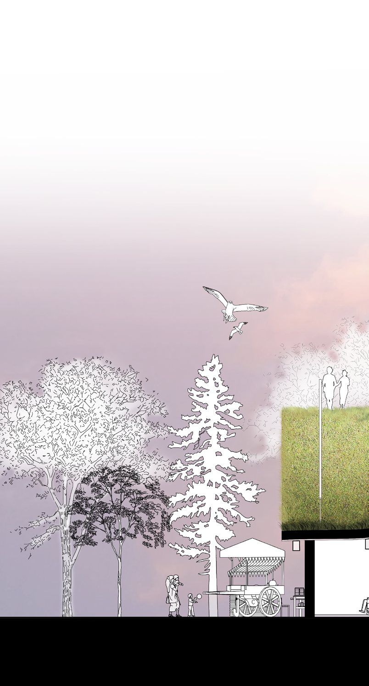
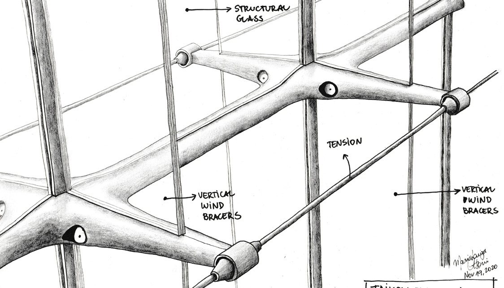

Denver's Missing Middle
An evolutionary mixed-income townhouse community for Denver's Globeville neighborhood, designed around modular bays, live/work options, and shared outdoor amenities.

Architecture Portfolio · May 2026
Selected architectural works exploring affordable housing, nature-based design, flood resilience, and mixed-use urban intensification.
About
Maria Ottoni is an architectural and site designer with graduate training in architecture, urbanism, and water-focused design research.
My passion is about investigating new ways of integrating nature-based solutions into the design of affordable housing to contribute to creating more sustainable and resilient neighbourhoods.
Download resume PDFCapabilities
Projects
A focused collection of academic, professional, and competition work from 2020 to 2026.

An evolutionary mixed-income townhouse community for Denver's Globeville neighborhood, designed around modular bays, live/work options, and shared outdoor amenities.

A high-density mixed-use district with seven buildings, thirteen towers, pedestrian-oriented streets, green spaces, and transit connectivity.

A multi-building residential redevelopment introducing 1,046 apartment units and active street edges on a former industrial property.

A six-storey residential building in Waterloo with 91 units, 112 parking spaces, and a contemporary material palette.

A contemporary forest cabin and bed-and-breakfast designed for passive comfort, lake views, and integration with the Big Island landscape.

A master plan for flood-resilient, evolutionary amphibious housing and green infrastructure in the Roncador River region.

A nature-based Mechanics Institute on the Grand River that integrates blue-green infrastructure with circular building systems.

A multifunctional urban market and public gathering space celebrating the Don River through an undulating steel canopy and green roof.

A hand-drawing study exploring a landscape-driven museum proposal through plans, sections, and spatial sequencing.
Resume
Capabilities
Contact